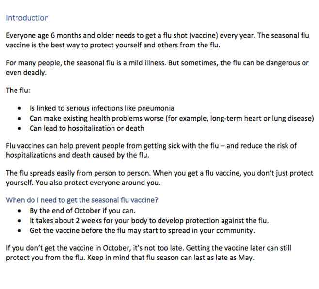
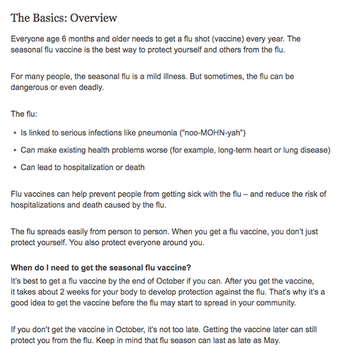
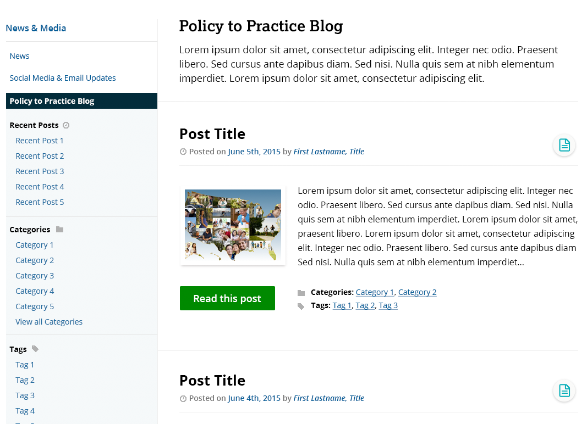
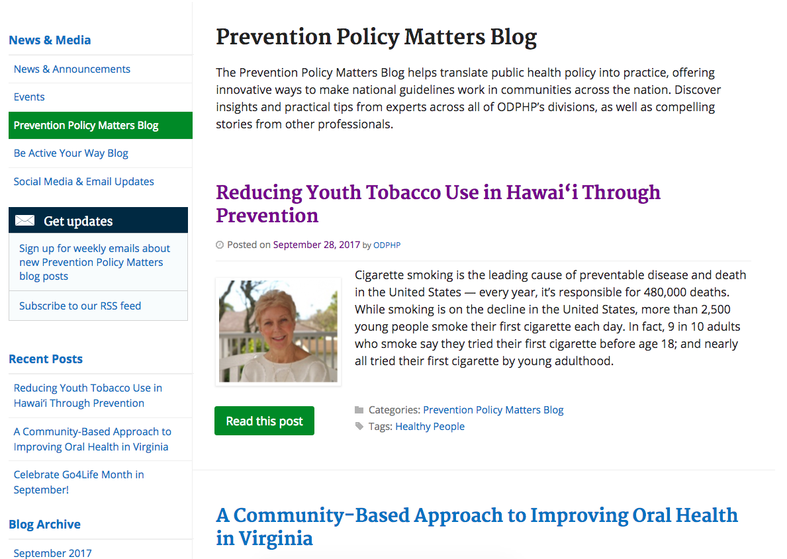
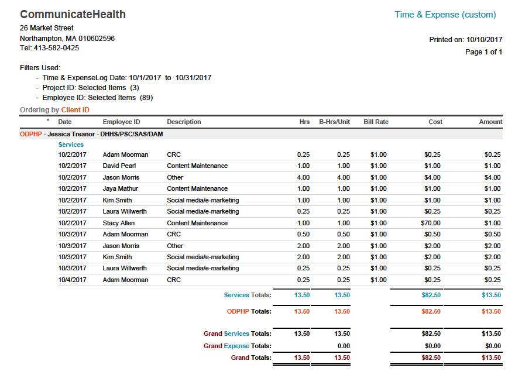
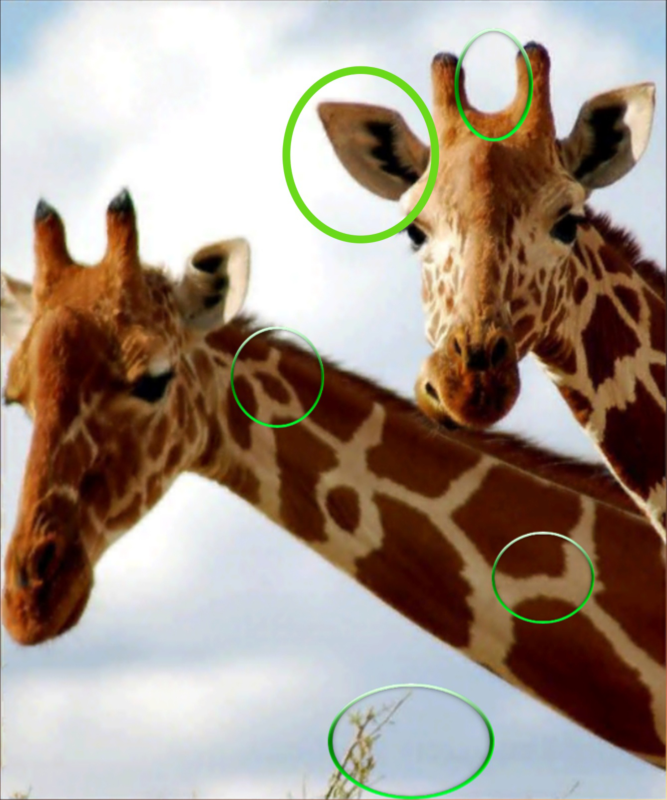
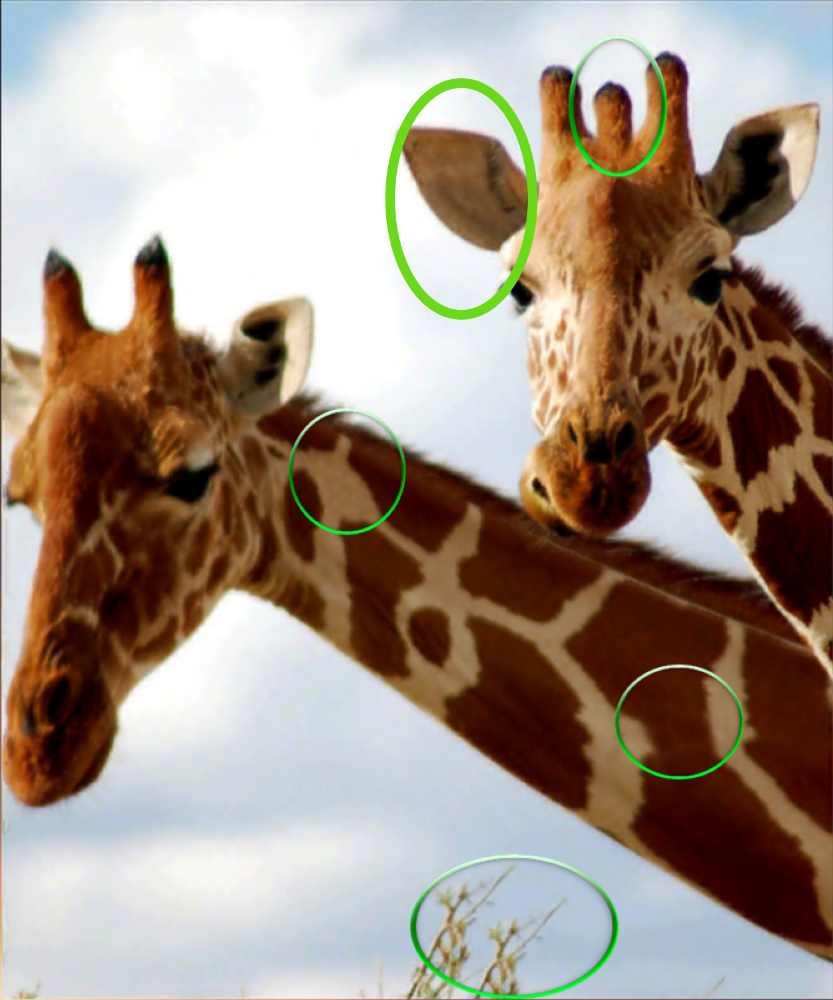

Brown Bag
October 11, 2017
Word doc

Webpage

Mockup

Webpage

Billquick Report



Checking a product to ensure that it meets:
To ensure quality products
Relates to how many CH values?
Split into teams to discuss specific types of QC for your team
Feel free to reference the QC List Google Doc:
https://communicatehealth.github.io/qc-brown-bag/qc-list.html
| Jaya | Jason | Amy | Corinne | David | Aleah | Kelsey | Blythe |
| Katie | Jeff | Grace | Janel | De Lisa | Alana | Kim | Caroline |
| Megan | Jocelyn | Jenna | Lizzie | Elise | Aria | Rachel O | Laura |
| Rachel P | Mike | Margaret | Huijuan | Mareika | Ayanna | Sami | Rebecca |
| Katrina | Vicki | Nicole | Raven | Sarah N | Luisa | Beth | Susan |
Start with the Product Brief
Turn project requirements into testable statements
Turn project requirements into testable statements
Exercises
Master QC Template:
https://communicatehealth.github.io/qc-brown-bag/qc-template.html
Requirements
Best Practices
Automated testing